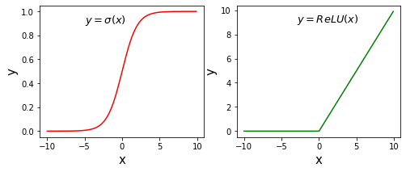
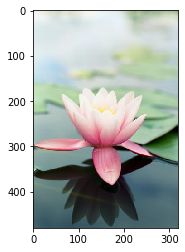
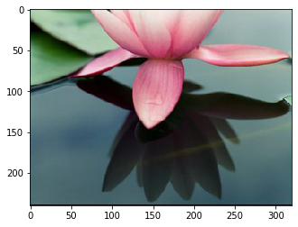
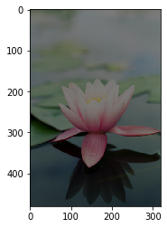
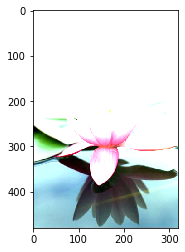
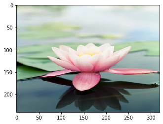
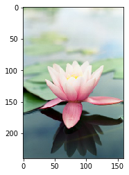

ndarray数组基本结构和操作
ndarray数组基本结构和操作写在前面一、创建ndarray（四种）二、属性操作（六个）三、基本运算（六个）四、索引和切片1. 一维数组2. 多维数组3. 查找索引五、统计方法（七类）六、随机数np.random1. 创建随机ndarray数组2. 随机打乱ndarray数组3. 随机选取元素（一维）七、线性代数八、文件读写与保存1. 文本读取2. 文件保存九、Numpy应用举例1. 计算激活函数Sigmoid和ReLU2. 图像翻转和裁剪
写在前面
为什么使用ndarray：
- 基础数据结构
- 效率比list高，底层C
- 支持矩阵运算
- 广播机制，兼容不同维度数组的加法
xxxxxxxxxx# 使用前导入库文件import numpy as np一、创建ndarray（四种）
np.array(list)：从list/tuple创建np.arrange(start,stop,interval)：创建序列np.zero([d1,d2,...])：创建指定维度的全0矩阵（浮点）np.ones([d1,d2,...])：创建指定维度的全1矩阵（浮点）
二、属性操作（六个）
arr.size：数组形状，即(x,y,z)（返回元组）arr.dtype：数据类型arr.size：元素个数，即x*y*zarr.ndim：维度大小，即len(x,y,z)arr.astype(np.int64)：改变数据类型arr.reshap(m,n)：改变形状
三、基本运算（六个）
+加，-减，*乘，/除，//模，**乘方- 标量和ndarray数组之间的运算（所有元素进行运算）
- 两个ndarray数组之间的运算（对应位置元素进行运算）
四、索引和切片
1. 一维数组
- 一维数组跟Python列表的功能类似
- 区别：数组切片还是指向原来的内存区域
- 将值赋值给一个切片时，该值会自动传播到整个切片
- 如何复制数据？：使用
arr=np.copy(arr)
2. 多维数组
- 在多维数组中，各索引位置上的元素不再是标量而是多维数组
- 以逗号隔开的索引列表来选取单个元素：
arr[a][b]等价于arr[a,b] - 在多维数组中，如果省略了后面的索引，则返回对象会是一个低维数组
xxxxxxxxxx# 使用for语句生成列表 a = [0, 2, 4]a = [k for k in range(0, 6, 2)]3. 查找索引
xxxxxxxxxxa = np.array([1,2,3,4,2,4,3,3,4])max_a = a.max() # 返回第一个索引np.where(a==max_a) # 返回全部索引的元组五、统计方法（七类）
对整个数组或某个轴向的数据进行统计计算。 （以下方法既可以当做数组的实例方法，也可以当做Numpy函数使用）
mean：计算算术平均数，零长度数组的mean为NaN。std和var：计算标准差和方差，自由度可调（默认为n）。sum：对数组中全部或某轴向的元素求和，零长度数组的sum为0。max和min：计算最大值和最小值。argmin和argmax：分别为最大和最小元素的索引。cumsum：计算所有元素的累加。cumprod：计算所有元素的累积。
xxxxxxxxxx# 计算均值，使用arr.mean() 或 np.mean(arr)，二者是等价的arr = np.array([[1,2,3], [4,5,6], [7,8,9]])arr.mean(), np.mean(arr)# 指定计算的维度# 沿着第1维求平均，也就是将[1, 2, 3]取平均等于2，[4, 5, 6]取平均等于5，[7, 8, 9]取平均等于8arr.mean(axis = 1)# 沿着第0维求和，也就是将[1, 4, 7]求和等于12，[2, 5, 8]求和等于15，[3, 6, 9]求和等于18arr.sum(axis=0)# 沿着第0维求最大值，也就是将[1, 4, 7]求最大值等于7，[2, 5, 8]求最大值等于8，[3, 6, 9]求最大值等于9arr.max(axis=0)# 沿着第1维求最小值，也就是将[1, 2, 3]求最小值等于1，[4, 5, 6]求最小值等于4，[7, 8, 9]求最小值等于7arr.min(axis=1)六、随机数np.random
1. 创建随机ndarray数组
- 设置随机数种子
xxxxxxxxxx# 多次运行，程序输出结果一致# 如果不设置随机数种子，多次运行输出结果不一致np.random.seed(10)a = np.random.rand(3, 3)- 均匀分布
xxxxxxxxxx# 生成均匀分布随机数，随机数取值范围在[0, 1)之间a = np.random.rand(3, 3)# 生成均匀分布随机数，指定随机数取值范围和数组形状# 未指定形状则返回一个数字，即rand()等价于uniform(0,1)a = np.random.uniform(low = -1.0, high = 1.0, size=(2,2))- 正态分布
xxxxxxxxxx# 生成标准正态分布随机数a = np.random.randn(3, 3)# 生成正态分布随机数，指定均值loc和方差scalea = np.random.normal(loc = 1.0, scale = 1.0, size = (3,3))2. 随机打乱ndarray数组
- 随机打乱1维ndarray数组顺序，发现所有元素位置都被打乱了
xxxxxxxxxx# 生成一维数组a = np.arange(0, 30)# 打乱一维数组顺序np.random.shuffle(a)- 随机打乱2维ndarray数组顺序，发现只有行的顺序被打乱了，列顺序不变
xxxxxxxxxx# 生成一维数组a = np.arange(0, 30)# 将一维数组转化成2维数组a = a.reshape(10, 3)# 打乱一维数组顺序np.random.shuffle(a)3. 随机选取元素（一维）
xxxxxxxxxx# 随机选取部分元素a = np.arange(30)b = np.random.choice(a, size=5)七、线性代数
线性代数（如矩阵乘法、矩阵分解、行列式以及其他方阵数学等）是任何数组库的重要组成部分，Numpy中实现了线性代数中常用的各种操作，并形成了numpy.linalg线性代数相关的模块。
diag：以一维数组的形式返回方阵的对角线（或非对角线）元素，或将一维数组转换为方阵（非对角线元素为0）。dot：矩阵乘法。注意：b.dot(c)等价于np.dot(b,c)。trace：计算对角线元素的和。linalg.det：计算矩阵行列式。linalg.eig：计算方阵的特征值和特征向量。linalg.inv：计算方阵的逆。
xxxxxxxxxx# 矩阵相乘a = np.arange(12)b = a.reshape([3, 4])c = a.reshape([4, 3])# 矩阵b的第二维大小，必须等于矩阵c的第一维大小d = b.dot(c) # 等价于 np.dot(b, c)八、文件读写与保存
1. 文本读取
Numpy可以方便的进行文件读写，如下面这种格式的文本文件：

xxxxxxxxxx# 使用np.fromfile从文本文件'housing.data'读入数据# 这里要设置参数sep = ' '，表示使用空白字符来分隔数据# 空格或者回车都属于空白字符，读入的数据被转化成1维数组d = np.fromfile('./work/housing.data', sep = ' ')2. 文件保存
Numpy提供了save和load接口，直接将数组保存成文件(保存为.npy格式)，或者从.npy文件中读取数组。
xxxxxxxxxx# 产生随机数组aa = np.random.rand(3,3)np.save('a.npy', a)# 从磁盘文件'a.npy'读入数组b = np.load('a.npy')# 检查a和b的数值是否一样check = (a == b).all()九、Numpy应用举例
1. 计算激活函数Sigmoid和ReLU
使用ndarray数组可以很方便的构建数学函数，并利用其底层的矢量计算能力快速实现计算。下面以神经网络中比较常用激活函数Sigmoid和ReLU为例，介绍代码实现过程。
xxxxxxxxxx# ReLU和Sigmoid激活函数示意图import numpy as npimport matplotlib.pyplot as pltimport matplotlib.patches as patches#设置图片大小plt.figure(figsize=(8, 3))# x是1维数组，数组大小是从-10. 到10.的实数，每隔0.1取一个点x = np.arange(-10, 10, 0.1)# 计算 Sigmoid函数s = 1.0 / (1 + np.exp(- x))# 计算ReLU函数y = np.clip(x, a_min = 0., a_max = None)########################################################## 以下部分为画图程序# 设置两个子图窗口，将Sigmoid的函数图像画在右边f = plt.subplot(121)# 画出函数曲线plt.plot(x, s, color='r')# 添加文字说明plt.text(-5., 0.9, r'$y=\sigma(x)$', fontsize=13)# 设置坐标轴格式currentAxis=plt.gca()currentAxis.xaxis.set_label_text('x', fontsize=15)currentAxis.yaxis.set_label_text('y', fontsize=15)# 将ReLU的函数图像画在左边f = plt.subplot(122)# 画出函数曲线plt.plot(x, y, color='g')# 添加文字说明plt.text(-3.0, 9, r'$y=ReLU(x)$', fontsize=13)# 设置坐标轴格式currentAxis=plt.gca()currentAxis.xaxis.set_label_text('x', fontsize=15)currentAxis.yaxis.set_label_text('y', fontsize=15)plt.show()
2. 图像翻转和裁剪
图像是由像素点构成的矩阵，其数值可以用ndarray来表示。将上述介绍的操作用在图像数据对应的ndarray上，可以很轻松的实现图片的翻转、裁剪和亮度调整，具体代码和效果如下所示。
xxxxxxxxxx# 导入需要的包import numpy as npimport matplotlib.pyplot as pltfrom PIL import Image# 读入图片image = Image.open('bus.png')image = np.array(image)# 查看数据形状，其形状是[H, W, 3]，# 其中H代表高度， W是宽度，3代表RGB三个通道image.shape #(612, 612, 3)# 原始图片plt.imshow(image)
xxxxxxxxxx# 垂直方向翻转# 这里使用数组切片的方式来完成，# 相当于将图片最后一行挪到第一行，# 倒数第二行挪到第二行，..., # 第一行挪到倒数第一行# 对于行指标，使用::-1来表示切片，# 负数步长表示以最后一个元素为起点，向左走寻找下一个点# 对于列指标和RGB通道，仅使用:表示该维度不改变image1 = image[::-1, :, :]plt.imshow(image1)
xxxxxxxxxx# 水平方向翻转image2 = image[:, ::-1, :]plt.imshow(image2)# 保存图片im2 = Image.fromarray(image2)im2.save('im2.jpg')
xxxxxxxxxx# 高度方向裁剪H, W = image.shape[0], image.shape[1]# 注意此处用整除，H_start必须为整数H1 = H // 2 H2 = Himage3 = image[H1:H2, :, :]plt.imshow(image3)
xxxxxxxxxx# 宽度方向裁剪W1 = W//6W2 = W//3 * 2image4 = image[:, W1:W2, :]plt.imshow(image4)
xxxxxxxxxx# 两个方向同时裁剪image5 = image[H1:H2, \ W1:W2, :]plt.imshow(image5)
xxxxxxxxxx# 调整亮度image6 = image * 0.5plt.imshow(image6.astype('uint8'))
xxxxxxxxxx# 调整亮度image7 = image * 2.0# 由于图片的RGB像素值必须在0-255之间，# 此处使用np.clip进行数值裁剪image7 = np.clip(image7, \ a_min=None, a_max=255.)plt.imshow(image7.astype('uint8'))
xxxxxxxxxx#高度方向每隔一行取像素点image8 = image[::2, :, :]plt.imshow(image8)
xxxxxxxxxx#宽度方向每隔一列取像素点image9 = image[:, ::2, :]plt.imshow(image9)
xxxxxxxxxx#间隔行列采样，图像尺寸会减半，清晰度变差image10 = image[::2, ::2, :]plt.imshow(image10)print(image10.shape) # (240, 160, 3)